A type of spatial relationship in which two or more polygons share a side or boundary.
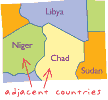
The state or quality of lying close or contiguous.
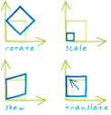
An alternative name specified for fields, tables, files, or datasets that is more descriptive and user-friendly than the actual name. On computer networks, a single e-mail alias may refer to a group of e-mail addresses.
In geoprocessing, an alternate name for a toolbox. Toolbox aliases can be used to avoid confusion when working with tools with the same name that are stored in different toolboxes. For example, tools in the Analysis Tools toolbox can be differentiated from similar tools in the Spatial Analyst Tools toolbox by adding "_analysis" to their names at the command line, as in "clip_analysis."
The height or vertical elevation of a point above a reference surface. Altitude measurements are usually based on a given reference datum, such as mean sea level.
The height above the horizon, measured in degrees, from which a light source illuminates a surface. Altitude is used when calculating a hillshade, or for controlling the position of a light source in a scene.
In digital image processing, data from sources other than remote sensing, used to assist in analysis and classification or to populate metadata.
Supplementary data.
On a map, a shape defined by a connected series of unique x,y coordinate pairs. An arc may be straight or curved.
A coverage feature class that represents lines and polygon boundaries. One line feature can contain many arcs. Arcs are topologically linked to nodes and to polygons. Their attributes are stored in an arc attribute table (AAT). Nodes indicate the endpoints and intersections of arcs; they do not exist as independent features. Together, the from-node and the to-node define the direction of the arc.
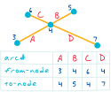
A closed, two-dimensional shape defined by its boundary or by a contiguous set of raster cells.
A calculation of the size of a two-dimensional feature, measured in square units.
The compass direction that a topographic slope faces, usually measured in degrees from north. Aspect can be generated from continuous elevation surfaces. For example, the aspect recorded for a TIN face is the steepest downslope direction of the face, and the aspect of a cell in a raster is the steepest downslope direction of a plane defined by the cell and its eight surrounding neighbors.
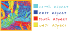
The conceptual center of a projection system.
Nonspatial information about a geographic feature in a GIS, usually stored in a table and linked to the feature by a unique identifier. For example, attributes of a river might include its name, length, and sediment load at a gauging station.
In raster datasets, information associated with each unique value of a raster cell.
Information that specifies how features are displayed and labeled on a map; for example, the graphic attributes of a river might include line thickness, line length, color, and font for labeling.
In MOLE, aspatial information about a geographic feature in a GIS, usually stored in a table and linked to the feature by a unique identifier. For example, attributes of a force element might include its name and speed. Most MOLE attributes are what some military specifications refer to as labels or modifiers.
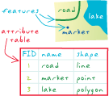
The automatic functioning of a machine, system, or process, without the need for human interaction.
In COM technology, a feature that allows an object that was designed for use in one application to be accessed in another application. For example, ArcObjects may be accessed in Visual Basic and in other languages, tools, and applications that support automation.
The horizontal angle, measured in degrees, between a baseline drawn from a center point and another line drawn from the same point. Normally, the baseline points true north and the angle is measured clockwise from the baseline.
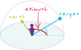
A compass direction. For example, in some GIS software, the direction from which a light source illuminates a surface is called the azimuth.
In navigation, the horizontal angle, measured in degrees, between a reference line drawn from a point and another line drawn from the same point to a point on the celestial sphere. Normally, the reference line points true north and the angle is measured clockwise from the reference line.
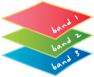
In network analysis, an entity that prevents flow from traversing a network edge or junction.
A line feature used to keep certain points from being used in the calculation of new values when a raster is interpolated. The line can represent a cliff, ridge, or some other interruption in the landscape. Only the sample points on the same side of the barrier as the current processing cell will be considered.
For geometric networks in ArcMap, a temporary graphic that is placed on the network, past which a trace cannot continue.
For network datasets in ArcMap, a network location in a network analysis layer that restricts the traversability of a network element (edge or junction) in the network dataset.
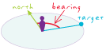
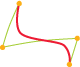
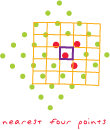
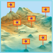
In a variogram map, each cell that groups lags with similar distance and direction. Bins are commonly formed by dividing the sample area into a grid of cells or sectors, and are used to calculate the empirical semivariogram for kriging.
In a histogram, user-defined size classes for a variable.
Acronym for binary large object. A large block of data, such as an image, a sound file, or geometry, stored in a database. The database cannot read the BLOB's structure and only references it by its size and location.
The data type of the column in the database that stores binary large objects.
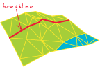
A zone around a map feature measured in units of distance or time. A buffer is useful for proximity analysis.
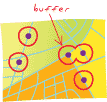
A polygon enclosing a point, line, or polygon at a specified distance.
Space on a computer disk or RAM that has been allocated for temporary storage. This temporary storage may also be called a spooler when it is used to hold data in memory before the data is sent to another machine, such as a printer.
In ArcGIS, the process of creating a network system. For geometric networks, this includes establishing connectivity, creating network features, and creating logical network tables. For network datasets, this includes establishing connectivity, creating network elements, and assigning network attribute values.
An ArcInfo Workstation command that constructs topology and creates a feature attribute table for a coverage.
An ArcToolbox command in the Coverage toolbox that creates or updates feature attribute tables and polygon topology. Build is also used to synchronize polygon User-IDs with label point User-IDs.
The digital equivalent of a drawing, figure, or schematic created using a CAD system.
In ArcCatalog, an item in the Catalog tree representing all features and annotation in a CAD file. The symbology defined in the CAD file determines how features are drawn in ArcMap or in the ArcCatalog preview.
A layer that references a set of CAD data. CAD data is vector data of a mixed feature type. CAD layers may be of two types: CAD drawing dataset layers, in which one map layer represents the entire CAD file, and CAD feature layers, in which data is organized by geometry type.
A component of a CAD drawing file. CAD layers are the digital equivalent of acetates in overlay drafting, and are powerful tools for organizing a drawing into logical categories. CAD layers and levels may be managed with ArcGIS. In MicroStation, layers are also referred to as levels.
The comparison of the accuracy of an instrument's measurements to a known standard.
In spatial analysis, the selection of attribute values and computational parameters that will cause a model to properly represent the situation being analyzed. For example, in pathfinding and allocation, calibration generally refers to assigning or calculating impedance values.
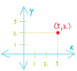
The smallest unit of information in raster data, usually square in shape. In a map or GIS dataset, each cell represents a portion of the earth, such as a square meter or square mile, and usually has an attribute value associated with it, such as soil type or vegetation class.
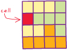
A pixel.
A small drawing, usually of a frequently used or complex symbol, notation, or detail. Cells are similar to blocks in AutoCAD drawings.
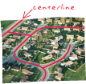
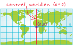
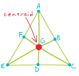
A map used to plot a course for air or water navigation.
A graphic representation of tabular data; a diagram showing the relationship between two or more variable quantities, usually measured along two perpendicular axes. A chart may also be referred to as a graph.
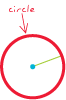
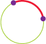
A set of entities grouped together on the basis of shared attribute values.
Pixels in a raster file that represent the same condition.
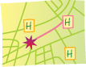
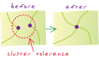
Acronym for coordinate geometry. A method for calculating coordinate points from surveyed bearings, distances, and angles.
Automated mapping software used in land surveying that calculates locations using distances and bearings from known reference points.
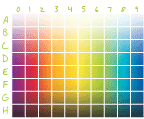
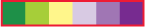
An item in an attribute table.
The vertical dimension of a table. Each column stores the values of one type of attribute for all the records, or rows, in the table. All the values in a given column are of the same data type; for example, number, string, BLOB, or date.
A vertical group of cells in a raster, or pixels in an image.
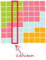
An instruction to a computer program, usually one word or concatenated words or letters, given by the user from a control device, such as a keyboard, or read from a file by a command interpreter.
A menu, menu item, button, combo box, text box, or tool on a toolbar.
Any class in an ArcGIS system that implements the ICommand interface and can, therefore, be added to a menu or toolbar in an ArcGIS application.
A widely used rule for adjusting a traverse that assumes the precision in angles or directions is equivalent to the precision in distances. This rule distributes the closure error over the whole traverse by changing the northings and eastings of each traverse point in proportion to the distance from the beginning of the traverse. More specifically, a correction factor is computed for each point as the sum of the distances along the traverse from the first point to the point in question, divided by the total length of the traverse. The correction factor at each point is multiplied by the overall closure error to get the amount of error correction distributed to the point's coordinates. The compass rule is also known as the Bowditch rule, named for the American mathematician and navigator Nathaniel Bowditch (1773-1838).
In ArcMap and Survey Analyst for field measurements, one of three adjustment methods available for adjusting closure error for a traverse computation. The other two methods are the transit rule and the Crandall rule.
The process of reducing the size of a file or database. Compression improves data handling, storage, and database performance. Examples of compression methods include quadtrees, run-length encoding, and wavelets.
A process that removes unreferenced rows from geodatabase system tables and user delta tables. Compression helps maintain versioned geodatabase performance.
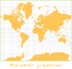
The way in which features in GIS data are attached to one another functionally or spatially.
In a geodatabase, the state of association between edges and junctions in a network system for network data models. Connectivity helps define and control flow, tracing, and pathfinding in a network.
In a coverage, topological identification of connected arcs by recording the from-node and to-node for each arc. Arcs that share a common node are connected.
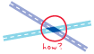
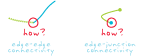
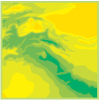
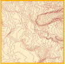
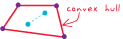
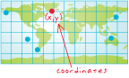
A reference framework consisting of a set of points, lines, and/or surfaces, and a set of rules, used to define the positions of points in space in either two or three dimensions. The Cartesian coordinate system and the geographic coordinate system used on the earth's surface are common examples of coordinate systems.
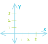
In ArcGIS, a reference system that locates a position in space and defines the relationships between positions. Coordinate systems enable individual datasets to be georeferenced to each other. The specification of a coordinate system is one of the initial steps in creating a new feature class or raster dataset. Three coordinate systems commonly used in ArcGIS include geographic, projected, and vertical.
A function of time, distance, or any other factor that incurs difficulty or an outlay of resources.
In ArcGIS Network Analyst, an attribute of a network element used to model impedance and demand in network datasets. Cost is an attribute that is accumulated during traversal of a network.
In ArcInfo, a classification describing the format of geographic features and supporting data in a coverage. Feature classes include point, arc, node, route, route system, section, polygon, and region. One or more coverage features are used to model geographic features; for example, arcs and nodes can be used to model linear features, such as street centerlines. The tic, annotation, link, and boundary feature classes provide supporting data for coverage data management and viewing.
See also coverage.
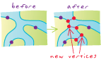
A special-case, least-squares-based method for adjusting the closure error in a traverse. The Crandall rule is most frequently used in a closed traverse that represents a parcel from a subdivision plan to ensure that tangency between courses remains intact as, for example, when applied to a tangent curve. It assumes that course directions and angles have no error and, therefore, all error corrections are applied only to the distances. This method uses a least-squares adjustment to distribute the closure error, and applies infinite weight to the angles or direction measurements to ensure that they are not adjusted. In some circumstances the results of this adjustment method may be unexpected, or the adjustment may not be possible, and an alternative method is required. The Crandall rule was developed by C.L. Crandall around 1901.
In ArcMap and Survey Analyst for field measurements, one of three adjustment methods available for adjusting closure error for a traverse computation. The other two methods are the transit rule and the compass rule.
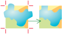
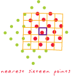
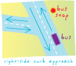
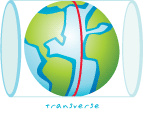
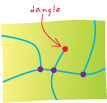
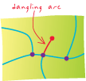
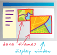
In GIS, a mathematical construct for representing geographic objects or surfaces as data. For example, the vector data model represents geography as collections of points, lines, and polygons; the raster data model represents geography as cell matrixes that store numeric values; and the TIN data model represents geography as sets of contiguous, nonoverlapping triangles.
In ArcGIS, a set of database design specifications for objects in a GIS application. A data model describes the thematic layers used in the application (for example, hamburger stands, roads, and counties); their spatial representation (for example, point, line, or polygon); their attributes; their integrity rules and relationships (for example, counties must nest within states); their cartographic portrayal; and their metadata requirements.
In information theory, a description of the rules by which data is defined, organized, queried, and updated within an information system (usually a database management system).
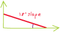
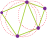
Acronym for digital elevation model. The representation of continuous elevation values over a topographic surface by a regular array of z-values, referenced to a common datum. DEMs are typically used to represent terrain relief.
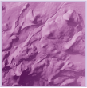
A format for elevation data, tiled by map sheet, produced by the National Mapping Division of the USGS.
In spatial measurements, the quantity per unit area or length.
In a substance such as a gas, solid, or liquid, a measurement of the ratio of mass to volume.
In ArcGIS Spatial Analyst, a function that distributes the quantity or magnitude of point or line observations over a unit of area to create a continuous raster—for example, population per square kilometer.
The secondary object in a relationship class, such as a table containing attributes associated with features in a related table.
In ArcGIS Network Analyst, a network location used in origin-destination cost matrix analysis that specifies an ending location.
In ArcGIS Spatial Analyst, the ending point for a path when finding the least-cost path.
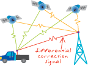
A device connected to a computer, consisting of a tablet and a handheld puck, that converts positions on the tablet surface as they are traced by an operator to digital x,y coordinates, yielding vector data consisting of points, lines, and polygons.
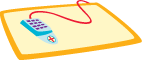
The title of a person who uses a digitizer.
An optical device that translates an analog image into an array of digital pixel values. A video digitizer can be used in place of a manual digitizer, but since it produces a raster image, additional software must be used to convert the data into vector format before topological analysis can be done.
A length of a certain distance and bearing.
The area over which an entity extends.
The number of axes that are essential to the existence of an entity in space. For example, the identity of a location on a plane requires two axes; therefore, a plane exists in the second dimension, and an entity with two axes, or dimensions, may be uniquely identified as a plane.
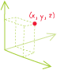
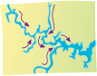
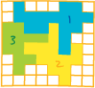
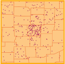
A line between two points that forms a boundary. In a geometric shape, an edge forms the boundary between two faces. In an image, edges separate areas of different tones or colors. In topology, an edge defines lines or polygon boundaries.
In a network system, a line feature through which a substance, resource, or traffic flows. Examples include a street in a transportation network and a pipeline in a sewer system. In a geometric network, a network edge can be simple or complex. A simple edge is always connected to exactly two junction features, one at each end. A complex edge is always connected to at least two junction features at its endpoints, but it can also be connected to additional junction features along its length. In a network dataset, a network edge is only connected to two junctions at its endpoints.
In a TIN data model, a line segment between nodes (sample data points). Edges store topologic information about the faces that they border.
A three-dimensional, closed geometric shape, all planar sections of which are ellipses or circles. An ellipsoid has three independent axes, and is usually specified by the lengths a,b,c of the three semi-axes. If an ellipsoid is made by rotating an ellipse about one of its axes, then two axes of the ellipsoid are the same, and it is called an ellipsoid of revolution, or spheroid. If the lengths of all three of its axes are the same, it is a sphere.
When used to represent the earth, an oblate ellipsoid of revolution, made by rotating an ellipse about its minor axis.
A geographic location stored in tabular rather than spatial form. Event types include address events, route events, x,y events, and temporal events.
In computing, an outcome or occurrence that happens when a user interacts with an application. For example, in a case in which clicking a button triggers the closing of a form, the event is the closing of the form.
In ArcGIS, a collection of geographic features with the same geometry type (such as point, line, or polygon), the same attributes, and the same spatial reference. Feature classes can be stored in geodatabases, shapefiles, coverages, or other data formats. Feature classes allow homogeneous features to be grouped into a single unit for data storage purposes. For example, highways, primary roads, and secondary roads can be grouped into a line feature class named "roads." In a geodatabase, feature classes can also store annotation and dimensions.
See also object class.
A column in a table that stores the values for a single attribute.
The place in a database record, or in a GUI, where data can be entered.
A synonym for surface.
A marker that identifies or calls attention to something, indicating importance or the need for further attention.
In ArcMap, a temporary graphic that is placed on a geometric network to specify the starting point, stops, or endpoint for a trace task.
In a scene or display, the area that appears to be closest to an observer.
The area in a raster layer where cells are eligible for selection and vectorization.
The abstraction, reduction, and simplification of features for change of scale or resolution.
The process of reducing the number of points in a line without losing the line's essential shape.
The process of enlarging and resampling cells in a raster format.
The steps involved in translating an address entry, searching for the address in the reference data embedded in an address locator, and delivering the best candidate or candidates. These steps include parsing the address, standardizing abbreviated values, assigning each address element to a category known as a match key, indexing the needed categories, searching the reference data, assigning a score to each potential candidate, filtering the list of candidates based on the minimum match score, and delivering the best match. The process requires reference files, input address records, address locators, and software.
See also address locator.
A database or file structure used primarily to store, query, and manipulate spatial data. Geodatabases store geometry, a spatial reference system, attributes, and behavioral rules for data. Various types of geographic datasets can be collected within a geodatabase, including feature classes, attribute tables, raster datasets, network datasets, topologies, and many others. Geodatabases can be stored in IBM DB2, IBM Informix, Oracle, Microsoft Access, Microsoft SQL Server, and PostgreSQL relational database management systems, or in a system of files, such as a file geodatabase.
See also database.
A network of longitude and latitude lines on a map or chart that relates points on a map to their true locations on the earth.
A glass plate or cell with a grid or cross wires on it that rests in the focal plane of the eyepiece of a telescope, used to locate and measure celestial objects.
In cartography, any network of parallel and perpendicular lines superimposed on a map and used for reference. These grids are usually referred to by the map projection or coordinate system they represent, such as universal transverse Mercator grid.
See raster.
Shadows drawn on a map to simulate the effect of the sun's rays over the varied terrain of the land.
The hypothetical illumination of a surface according to a specified azimuth and altitude for the sun. Hillshading creates a three-dimensional effect that provides a sense of visual relief for cartography, and a relative measure of incident light for analysis.
A representation or description of a scene, typically produced by an optical or electronic device, such as a camera or a scanning radiometer. Common examples include remotely sensed data (for example, satellite data), scanned data, and photographs.
In ArcGIS, a raster dataset.
In ArcGIS Image Server, a rendered image that users load from the server. The image service appears to the user as a virtual image. Some properties of a service may be defined by the client application.
In ArcGIS Server, a type of Web service that is generated from image data.
The estimation of surface values at unsampled points based on known surface values of surrounding points. Interpolation can be used to estimate elevation, rainfall, temperature, chemical dispersion, or other spatially-based phenomena. Interpolation is commonly a raster operation, but it can also be done in a vector environment using a TIN surface model. There are several well-known interpolation techniques, including spline and kriging.
In the context of linear referencing, the calculation of measure values for a route between two known measure values.
An element in the Catalog tree. Items include data sources, such as shapefiles and geodatabases, and nonspatial elements, such as folders.
A column of information in an INFO table.
Appending the fields of one table to those of another through an attribute or field common to both tables. A join is usually used to attach more attributes to the attribute table of a geographic layer.
Connecting two or more features from different sets of data so that they become a single feature.
In Survey Analyst - Cadastral Editor, the process of connecting the points from an unjoined parcel to their corresponding points in the cadastral fabric.
For network data models in a geodatabase, a point at which two or more edges meet.
In a coverage, a node joining two or more arcs.
A database of information about a subject, used in expert systems.
In PLTS, a series of tables used for database and cartographic production. Knowledge base tables contain validation rules for feature attribution, data collection, and symbology.
In cartography, text placed on or near a map feature that describes or identifies it.
In MOLE, text based on attribute data. Labels are placed dynamically on or near features based on the military specifications that MOLE supports. In MOLE, labels are often referred to as modifiers.
The visual representation of a geographic dataset in any digital map environment. Conceptually, a layer is a slice or stratum of the geographic reality in a particular area, and is more or less equivalent to a legend item on a paper map. On a road map, for example, roads, national parks, political boundaries, and rivers might be considered different layers.
In ArcGIS, a reference to a data source, such as a shapefile, coverage, geodatabase feature class, or raster, that defines how the data should be symbolized on a map. Layers can also define additional properties, such as which features from the data source are included. Layers can be stored in map documents (.mxd) or saved individually as layer files (.lyr). Layers are conceptually similar to themes in ArcView 3.x.
A line drawn between two points, an origin and a target, that is compared against a surface to show whether the target is visible from the origin and, if it is not visible, where the view is obstructed.
In a perspective view, the point and direction from which a viewer looks into an image.
In georeferencing, connections added between known points in a dataset being georeferenced and corresponding points in the dataset being used as a reference.
An operation that relates two tables using a common field, without altering either table.
In Survey Analyst for field measurements, an operation in which existing features can be connected to survey points. An association between survey points and feature vertices is created; feature locations are not updated automatically.
A database file that records changes in data, often used as part of a database restoration.
In an ArcSDE geodatabase, a table that maintains a list of the OBJECTIDs of selected records, allowing for faster analysis and processing of information.
A graphic representation of the spatial relationships of entities within an area.
Any graphical representation of geographic or spatial information.
The document used in ArcMap to display and work with geographic data. In ArcMap, a map contains one or more layers of geographic data, contained in data frames, and various supporting map elements, such as a scale bar.
A language that defines a syntax for combining map themes by applying mathematical operations and analytical functions to create new map themes. In a map algebra expression, the operators are a combination of mathematical, logical, or Boolean operators (+, >, AND, tan, and so on), and spatial analysis functions (slope, shortest path, spline, and so on), and the operands are spatial data and numbers.
In digital cartography, a means of covering or hiding features on a map to enhance cartographic representation. For example, masking is often used to cover features behind text to make the text more readable.
In ArcGIS, a means of identifying areas to be included in analysis. Such a mask is often referred to as an analysis mask, and may be either a raster or feature layer.
Information that describes the content, quality, condition, origin, and other characteristics of data or other pieces of information. Metadata for spatial data may describe and document its subject matter; how, when, where, and by whom the data was collected; availability and distribution information; its projection, scale, resolution, and accuracy; and its reliability with regard to some standard. Metadata consists of properties and documentation. Properties are derived from the data source (for example, the coordinate system and projection of the data), while documentation is entered by a person (for example, keywords used to describe the data).
A set of rules and procedures for representing a phenomenon or predicting an outcome.
A data representation of reality, such as the vector data model.
In geoprocessing in ArcGIS, one process or a sequence of processes connected together, that is created in ModelBuilder.
A raster dataset composed of two or more merged raster datasets—for example, one image created by merging several individual images or photographs of adjacent areas.
Maps of adjacent areas with the same spatial reference and scale whose boundaries have been matched and dissolved.
In linear referencing, a measure value that is added to a line feature. M-values are used to measure the distance along a line feature from a vertex (a known location) to an event.
Vertex attributes that are stored with x,y point coordinates in ESRI's Geometry Engine. Every type of geometry (point, polyline, polygon, and so on) can have attributes for every vertex.
An interconnected set of points and lines that represent possible routes from one location to another. For geometric networks, this consists of edge features, junction features, and the connectivity between them. For network datasets, this consists of edge, junction, and turn elements and the connectivity between them. For example, an interconnected set of lines representing a city streets layer is a network.
See also geometric network,
logical network,
network dataset,
physical network.
A geographic position in a network system.
In ArcGIS Network Analyst, a type of network analysis object that is zero-dimensional and has a defined position on a network dataset. It can be used during a network analysis operation, such as delivery stops for a route analysis. There are eight types of network locations: stops, barriers, facilities, incidents, origins, destinations, orders and depots.
In a geodatabase, the point representing the beginning or ending point of an edge, topologically linked to all the edges that meet there.
In a coverage, the beginning or ending point of an arc, topologically linked to all the arcs that meet there.
In a TIN, one of the three corner points of a triangle, topologically linked to all triangles that meet there. Each sample point in a TIN becomes a node in the triangulation that may store elevation z-values and tag values.
In graph theory, any vertex in a graph.
The point at which a computer, or other addressable device, attaches to a communications network.
In remote sensing, any disturbance in a frequency band.
Any irregular, sporadic, or random oscillation in a transmission signal.
Random or repetitive events that interfere with communication.
In a raster, irrelevant or meaningless cells that exist due to poor scanning or imperfections in the original source document.
In GIS, a digital representation of a spatial or nonspatial entity. Objects usually belong to a class of objects with common attribute values and behaviors.
In computing, a piece of software that performs a specific task and is controlled by another piece of software, called a client. For example, an object is often the interface by which an application program accesses an operating system and other services.
In ArcMap, ArcScene, or ArcGlobe, the camera, view, table or layer to which an animation track is attached.
In a geodatabase, a collection of nonspatial data of the same type or class. While spatial objects (features) are stored in feature classes in a geodatabase, nonspatial objects are stored in object classes.
A table in a geodatabase used to store a collection of objects with similar attributes and behavior. Objects with no locational information are stored as rows or records in object classes. Spatial objects, or features, are stored as rows in feature classes, which are a specialized type of object class in which objects have an extra attribute to define their geographic location.
A planar or cylindrical projection whose point of tangency is neither on the equator nor at a pole.
A conic projection whose axis does not line up with the polar axis of the globe.
A cylindrical projection whose lines of tangency or secancy follow neither the equator nor a meridian.
A data value or the symbolic representation of a data value in an expression. Operands may be numbers, character strings, functions, variables, parenthetical expressions in the body of a larger expression, and so on. Symbolic representations of operands, such as variables and functions, are evaluated before they are operated upon by the operators in the expression. For example, in the expression "1 + 2", the operands are 1 and 2, and are operated upon by the + (plus) operator, which adds the operands together and returns the value 3.
See also operator,
operator precedence.
An object's position or relationship in direction with reference to points of the compass.
In Survey Analyst for field measurements, the method by which horizontal angle readings for TPS measurements are converted into azimuths.
A fixed reference point in a coordinate system from which all other points are calculated, usually represented by the coordinates (0,0) in a planar coordinate system and (0,0,0) in a three-dimensional system. The center of a projection is not always its origin.
The primary object in a relationship, such as a feature class containing points where measurements are taken. The measurements are stored in another table.
In a network in ArcInfo Workstation, the beginning of a path.
In ArcGIS Network Analyst, a network location used in origin-destination cost matrix analysis that specifies a starting location.
An unusual or extreme data value in a dataset. In data analysis, outliers can potentially have a strong effect on results and so must be analyzed carefully to determine if they represent valid or erroneous data.
In geology, a feature that lies apart from the main body or mass to which it belongs: for example, a rock or stratum that has been separated from a formation by erosion.
A spatial operation in which two or more maps or layers registered to a common coordinate system are superimposed, either digitally or on a transparent material, for the purpose of showing the relationships between features that occupy the same geographic space.
In geoprocessing, the geometric intersection of multiple datasets to combine, erase, modify, or update features in a new output dataset.
In network datasets, a type of junction connectivity policy in which the way junctions connect to other junctions is not based on the existing edge connectivity policy; junctions "override" the edge connectivity policy.
In ArcGIS, an exception made to a property of a feature representation’s representation rule so that the feature is drawn differently than others sharing the same rule.
One of the variables that define a specific instance of a map projection or a coordinate system. Parameters differ for each projection and can include central meridian, standard parallel, scale factor, or latitude of origin.
A variable that determines the outcome of a function or operation.
In geoprocessing in ArcGIS, a characteristic of a tool. Values set for parameters define a tool's behavior during run time.
A piece or unit of land, defined by a series of measured straight or curved lines that connect to form a polygon.
In Survey Analyst - Cadastral Editor, a group of point, line and polygon features in the cadastral fabric that contain information such as dimensions on the line features, area on the polygon features and other administrative data. Parcels may be used to model lots, blocks, and many other land units.
In computing, the location of a computer file, given as the drive, directories, subdirectories, and file name, in that order.
In ArcGIS software, a geometric element from which polylines and polygons are constructed. A path is a sequence of connected, nonintersecting segments, with no two segments having the same start point or the same endpoint.
In ArcMap, ArcScene, and ArcGlobe, a single line feature or graphic used to define the movement of a camera, view or layer in an animation.
The smallest unit of information in an image or raster map, usually square or rectangular. Pixel is often used synonymously with cell.
In remote sensing, the fundamental unit of data collection. A pixel is represented in a remotely sensed image as a cell in an array of data values.
The smallest element of a display device, such as a video monitor, that can be independently assigned attributes, such as color and intensity. Pixel is an abbreviation for picture element.
Acronym for Production Line Tool Set. A software package that allows users to prepare and maintain data for maps, perform quality assurance/quality control tasks, and create map sheets. Its base product, PLTS Foundation, is composed of three parts: Foundation Tools, GIS Data ReViewer, and Map Production System and MPS-Atlas. The tools can be used with different product specifications, and are available as solutions that have been created for nautical, defense, aeronautical, and mapping agencies.
The closeness of a repeated set of observations of the same quantity to one another. Precision is a measure of the control over random error. For example, assessment of the quality of a surveyor's work is based in part on the precision of their measured values.
The number of significant digits used to store numbers, particularly coordinate values. Precision is important for accurate feature representation, analysis, and mapping.
A statistical measure of repeatability, usually expressed as the variance of repeated measures about the mean.
Acronym for pseudo-random noise. A signal carrying a code that can be reproduced exactly, but appears to be randomly distributed like noise. Each NAVSTAR satellite has a unique PRN code.
Acronym for pseudo-random number. A number representing a unique GPS satellite ID or code.
In geoprocessing in ArcGIS, a tool and its parameter values. One process, or multiple processes connected together, creates a model.
An ArcGIS Image Server operation applied to a specific raster dataset or the data in an image service. A process can modify the radiometry, geometry, or appearance of an image. Examples of ArcGIS Image Server processes include Blend Pixels, NDVI, and Stretching.
In Survey Analyst, a specific task for capturing survey data. This can include anything from a field control survey to data entry from a subdivision plan.
A specific plan, task, or scheme undertaken by a person or group of persons, usually for the purpose of problem identification and/or resolution, within a given time frame.
A method by which the curved surface of the earth is portrayed on a flat surface. This generally requires a systematic mathematical transformation of the earth's graticule of lines of longitude and latitude onto a plane. Some projections can be visualized as a transparent globe with a light bulb at its center (though not all projections emanate from the globe's center) casting lines of latitude and longitude onto a sheet of paper. Generally, the paper is either flat and placed tangent to the globe (a planar or azimuthal projection) or formed into a cone or cylinder and placed over the globe (cylindrical and conical projections). Every map projection distorts distance, area, shape, direction, or some combination thereof.
See also cylindrical projection,
conformal projection,
tangent projection,
secant projection,
conic projection,
azimuthal projection,
oblique projection,
equidistant projection,
azimuthal projection.

A spatial data model that defines space as an array of equally sized cells arranged in rows and columns, and composed of single or multiple bands. Each cell contains an attribute value and location coordinates. Unlike a vector structure, which stores coordinates explicitly, raster coordinates are contained in the ordering of the matrix. Groups of cells that share the same value represent the same type of geographic feature.
In ArcGIS, an in-memory representation of a raster dataset. A raster may exist in memory as a subset of a raster dataset; it may have a different cell size than the raster dataset; or it may exist using a different transformation than the raster dataset.
In geography, an area usually distinguished by common cultural or physical characteristics, such as Southern California, Western Europe, or Southeast Asia.
A set of contiguous cells with the same value.
In the coverage data structure, a polygon feature made up of multiple polygons that may be separate, overlapping, nested, or adjacent. The polygons that compose a region are stored in a polygon feature class, while the region is stored in a subclass of this feature class. A region has its own attributes but no shape geometry; its shape is defined by the shape geometry of the polygons that compose it.
A value associated with each independent variable in a regression equation, representing the strength and type of relationship the independent variable has to the dependent variable. For example, fire frequency might be modeled as a function of solar radiation, vegetation, precipitation, and aspect. A positive relationship between fire frequency and solar radiation is likely (the more sun, the more frequent the fire incidents). When the relationship is positive, the sign for the associated coefficient is also positive. A negative relationship between fire frequency and precipitation is also likely (places with more rain have fewer fires). Coefficients for negative relationships have negative signs. If the relationship is strong, the absolute value of the coefficient is large. Weak relationships are associated with coefficients near zero.
See also dependent variable,
independent variable,
regression equation.
In ArcGIS Spatial Analyst, an operator that evaluates specific relational conditions. If a condition is TRUE, the output is assigned a value of 1. If the condition is FALSE, the output is assigned a value of 0.
An expression used to compare values associated with data: greater than, less than, maximum, minimum, contains, and so forth.
The detail with which a map depicts the location and shape of geographic features. The larger the map scale, the higher the possible resolution. As scale decreases, resolution diminishes and feature boundaries must be smoothed, simplified, or not shown at all; for example, small areas may have to be represented as points.
The dimensions represented by each cell or pixel in a raster.
The smallest spacing between two display elements, expressed as dots per inch, pixels per line, or lines per millimeter.
In ArcGIS, the smallest allowable separation between two coordinate values in a feature class. A spatial reference can include x, y, z, and m resolution values. The inverse of a resolution value was called a precision or scale value prior to ArcGIS 9.2.
Any line feature, such as a street, highway, river, or pipe, that has a unique identifier.
A path through a network.
In ArcGIS Network Analyst, a path through a network that visits a set of specified network locations. In vehicle routing problem (VRP) analysis, a route may also refer to a vehicle and its associated properties and constraints.
A record in a table.
The horizontal dimension of a table composed of a set of columns containing one data item each.
A horizontal group of cells in a raster, or pixels in an image.
A procedure for adjusting the coordinates of all the data points in a dataset to allow a more accurate match between known locations and a few data points within the dataset. Rubber sheeting preserves the interconnectivity between points and objects through stretching, shrinking, or reorienting their interconnecting lines.
Error introduced by low-quality, flatbed scanners when scanning documents. For high-precision scanning, drum scanners are often used.
The ratio or relationship between a distance or area on a map and the corresponding distance or area on the ground, commonly expressed as a fraction or ratio. A map scale of 1/100,000 or 1:100,000 means that one unit of measure on the map equals 100,000 of the same unit on the earth.
In reference to double precision, the number of digits to the right of the decimal point in a number. For example, the number 56.78 has a scale of 2.
The structure or design of a database or database object, such as a table, view, index, stored procedure, or trigger. In a relational database, the schema defines the tables, the fields in each table, the relationships between fields and tables, and the grouping of objects within the database. Schemas are generally documented in a data dictionary. A database schema provides a logical classification of database objects.
A set of rules, stored in a file, that describe the structure of an XML document. The number, type, and order of elements allowed in an XML document are described in the schema. An XML parser can compare XML documents against the schema. An XML document that uses open and close tags properly is said to be well formed; if it also follows the rules of its designated schema, it is said to be valid.
A highly compressed, read-only data structure that can store spatial geometry (points, lines, and polygons), and attribute data. The SDC structure supports geocoding, routing, and most spatial operations. SDC is the core data structure used in ArcGIS StreetMap, ArcIMS RouteServer, RouteMAP IMS, ArcGIS Business Analyst, and BusinessMAP.
A computer that manages shared resources, such as disks, printers, and databases, on a network.
Software that provides services or functionality to client software. For example, a Web server is software that sends Web pages to browsers.
The best route or the route of least impedance between two or more points, taking into account connectivity and travel restrictions such as one-way streets and rush-hour traffic.
In ArcGIS Spatial Analyst, the least-cost path from a destination point to the nearest least-cost source.
The location or group of locations used as the endpoint for distance analysis.
A junction feature that pulls flow toward itself through the edges of a geometric network. For example, in a river network, the mouth of a river can be modeled as a sink, since gravity pulls all water toward it.
The location or group of locations used as the starting point for distance analysis.
A junction feature that pushes flow away from itself through the edges of a geometric network. For example, in a water distribution network, pump stations can be modeled as sources, since they drive the water through the pipes away from the pump stations.
Information about the locations and shapes of geographic features and the relationships between them, usually stored as coordinates and topology.
Any data that can be mapped.
For a spatial dataset in ArcGIS 9.1 and previous versions, the defined precision and allowable range for x- and y-coordinates and for m- and z-values, if present.
In ArcGIS Survey Analyst, a constraint that sets the minimum and maximum values for the geometry attributes. The extents of this domain define the precision at which geometry attributes (x, y, z, m, id) can be stored as integers. There is a finite number of integers available in the system, so the x,y spatial domain is analogous to a square grid that always contains the same number of rows and columns.
A three-dimensional shape obtained by rotating an ellipse about its minor axis, resulting in an oblate spheroid, or about its major axis, resulting in a prolate spheroid.
When used to represent the earth, a three-dimensional shape obtained by rotating an ellipse about its minor axis, with dimensions that either approximate the earth as a whole, or with a part that approximates the corresponding portion of the geoid.
In programming, the current data contained by an object.
A discrete snapshot of a database whenever a change is made. Every edit operation creates a new database state, and all geodatabase versions reference one of these database states and evolve over time through a series of states.
In geodatabase editing, the process of applying changes made from a replica to the relative replica in a replica pair.
The process of automatically updating certain elements of a metadata file.
In geodatabase editing, the geodatabase version that receives changes during synchronization. The synchronization version is always a child of the replica version. With one-way and two-way replication, the synchronization version is automatically reconciled and posted with the replica version. If there are conflicts between the synchronization version and the replica version, the conflicts must be resolved before more data changes can be sent.
In ArcGIS 9.1 and previous versions, a data version created in a checkout geodatabase when data is checked out to that geodatabase during disconnected editing. This version exists as a copy of the original data and represents the state of the data at the time of the checkout.
Occurring together, or at the same time.
In data transmission, precisely timed and steady transmission of information that allows for higher rates of data exchange.
A miniaturized version of a graphics file. A thumbnail can be used as a visual index for larger data or images.
In ArcGIS, a snapshot describing the geographic data contained in a data source or layer, or a map layout. A thumbnail might provide an overview of all the features in a feature class or a detailed view of the features in, and the symbology of, a layer. Thumbnails are not updated automatically; they will go out of date if features are added to a data source or if the symbology of a layer changes.
Graphics that mark divisions of measurement on a scale bar.
Short, regularly spaced lines along the edge of an image or neatline that indicate intervals of distance, such as the intersection of longitude and latitude lines to denote the graticule.
A command that requires interaction with the GUI before an action is performed. For example, a zoom tool requires a user to use the mouse to click on or draw a box over a digital map before the tool will cause the map to be redrawn at a larger scale.
A geoprocessing command in ArcGIS that performs such specific tasks as clip, split, erase, or buffer.
In geodatabases, the arrangement that constrains how point, line, and polygon features share geometry. For example, street centerlines and census blocks share geometry, and adjacent soil polygons share geometry. Topology defines and enforces data integrity rules (for example, there should be no gaps between polygons). It supports topological relationship queries and navigation (for example, navigating feature adjacency or connectivity), supports sophisticated editing tools, and allows feature construction from unstructured geometry (for example, constructing polygons from lines).
The branch of geometry that deals with the properties of a figure that remain unchanged even when the figure is bent, stretched, or otherwise distorted.
In an ArcInfo coverage, the spatial relationships between connecting or adjacent features in a geographic data layer (for example, arcs, nodes, polygons, and points). Topological relationships are used for spatial modeling operations that do not require coordinate information.
In ArcMap, ArcScene, and ArcGlobe, an ordered collection of similar keyframes that, when played as an animation, shows a dynamic transition between them.
In ArcGIS Tracking Analyst, a connecting line between two or more temporal events that share a common track identifier field (or ID field).
A group of data operations that comprise a complete operational task, such as inserting a row into a table.
A logical unit of work as defined by a user. Transactions can be data definition (create an object), data manipulation (update an object), or data read (select from an object).
An interaction with a Web service. A transaction includes a request to, and a response from, a Web service.
A rule for adjusting the closure error in a traverse. The transit rule distributes the closure error by changing the northings and eastings of each traverse point in proportion to the northing and easting differences in each course. More specifically, a correction is computed for each northing coordinate as the difference in the course's northings divided by the sum of all the courses' northing differences. Similarly, a correction is computed for each easting coordinate using the easting coordinate differences. The corrections are applied additively to each successive coordinate pair, until the final coordinate pair is adjusted by the whole closure error amount. The transit rule assumes that course directions are measured with a higher degree of precision than the distances. Usually, observed angles are balanced for angular misclosure prior to applying a transit rule adjustment, and corrections are proportional to the x and y components of the measured line. The transit rule is used infrequently since it is only valid in cases in which the measured lines are approximately parallel to the grid of the coordinate system in which the traverse is computed.
In Survey Analyst for field measurements, one of three adjustment methods available for adjusting closure error for a traverse computation. The other two methods are the Crandall rule and the compass rule.
A parcel that is only partially defined or that is missing a sequence of one or more lines that would otherwise close the parcel back onto its point of beginning.
Unclosed parcels can be used to model street centerlines and other line features in the Survey Analyst - Cadastral Editor cadastral fabric.
A measurable quantity that may be passed to a function. Values are either assigned or determined by calculation.
The lightness or darkness of a color.
The brightness of a color or how much light it reflects; for instance, blue, light blue, dark blue.
A symbol or placeholder that represents a changeable value or a value that has not yet been assigned.
A symbol or quantity that can represent any value or set of values, such as a text string or number. Variables may change depending on how they are used and applied.
A coordinate-based data model that represents geographic features as points, lines, and polygons. Each point feature is represented as a single coordinate pair, while line and polygon features are represented as ordered lists of vertices. Attributes are associated with each vector feature, as opposed to a raster data model, which associates attributes with grid cells.
Any quantity that has both magnitude and direction.
In ArcGIS, a way to see the contents of a selected item in the Catalog tree in ArcCatalog.
In a database, a stored query used to display data from specified columns from one or multiple tables. Views can be used by the database administrator to restrict access to data by only displaying certain columns or to join information from two or more tables and display them in one table. In geodatabases, views can also include the spatial column of a feature class. These spatial views can be used as feature classes in ArcGIS client applications.
A number that indicates the importance of a variable for a particular calculation. The larger the weight assigned to the variable, the more that variable will influence the outcome of the operation.
A property of a network element typically used to describe the element or to assign a cost for traversing the element. For example, this value may represent the phase or the length of a primary conductor in an electrical distribution system. Weights are calculated based on an attribute of each network feature.
A container for geographic data. A workspace can be a folder that contains shapefiles, a geodatabase, a feature dataset, or an ArcInfo workspace. Other multidimensional data formats such as netCDF or HDF can also be considered workspaces, and are often treated in this manner within GIS software packages.
In ArcObjects, a container for spatial and nonspatial datasets such as feature classes, raster datasets, and tables that provides methods to instantiate existing datasets and create new datasets. Different types of workspaces are specified by the esriWorkspaceType enumerator: esriFileSystemWorkspace (such as an ArcInfo workspace), esriLocalDatabaseWorkspace (such as a personal geodatabase), and esriRemoteDatabaseWorkspace (such as an ArcSDE geodatabase).
In a planar coordinate system, the vertical line that runs above and below (north and south of) the origin (0,0). Numbers north of the origin are positive, and numbers south of it are negative.
In a spherical coordinate system, a line in the equatorial plane that passes through 90 degrees east longitude.
On a chart, the vertical axis.
All cells in a raster with the same value, regardless of whether or not they are contiguous.
Additional information about a location or address, used to narrow a geocoding search and increase search speed. Address elements and their related locations such as city, postal code, or country all can act as a zone.